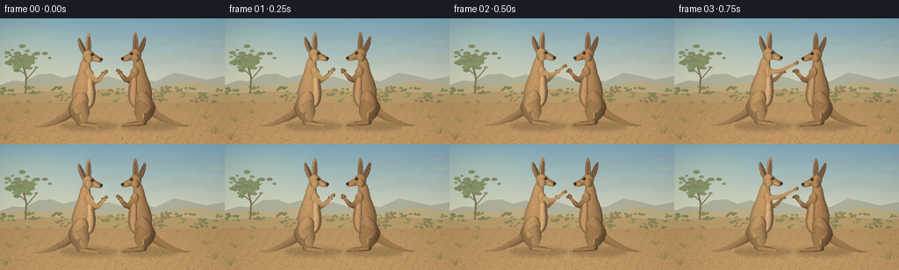
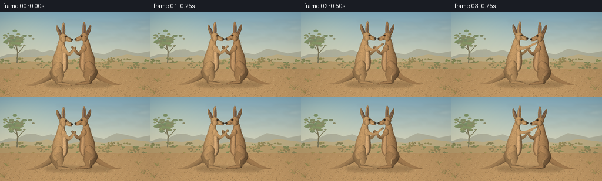
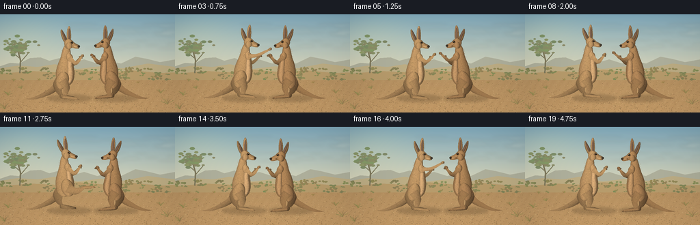
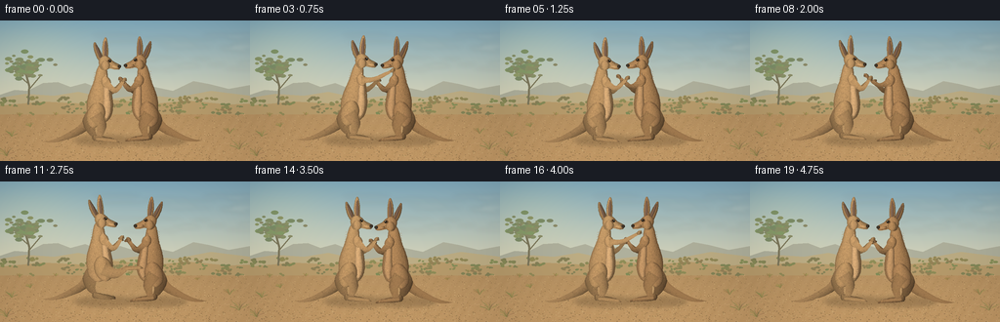

CODING AGENTS AS PIXEL WORLD MODELS
traex/GPT-6.1-Sol · instance_preservation_0009
点击播放 · 原生 RGB 像素
逐轮保存的候选
回放视频、检查图与代码变化。
每份候选均可单独播放。实际图片检查记录在下方工具轨迹中。
候选 01播放与检查图
点击播放 · 原生 RGB 像素


展开代码变化
--- 上一保存版本
+++ 本次保存版本
@@ -0,0 +1,288 @@
+"""Procedurally drawn RGB animation. No external assets or rendering engine."""
+from pathlib import Path
+import math, json
+import numpy as np
+from PIL import Image, ImageDraw, ImageFilter
+import artifact_io
+
+ROOT = Path(__file__).resolve().parent
+SPEC = json.loads((ROOT/'task_spec.json').read_text())
+W,H = SPEC['width'],SPEC['height']
+S=3
+SW,SH=W*S,H*S
+
+def bezier(commands):
+ pts=[]; p=None
+ for c in commands:
+ if c[0]=='M': p=np.array(c[1:],float); pts.append(tuple(p))
+ elif c[0]=='L': p=np.array(c[1:],float); pts.append(tuple(p))
+ elif c[0]=='C':
+ a=p.copy(); b=np.array(c[1:3]); d=np.array(c[3:5]); e=np.array(c[5:7])
+ for t in np.linspace(0,1,24)[1:]: pts.append(tuple((1-t)**3*a+3*(1-t)**2*t*b+3*(1-t)*t*t*d+t**3*e))
+ p=e
+ elif c[0]=='Q':
+ a=p.copy(); b=np.array(c[1:3]); e=np.array(c[3:5])
+ for t in np.linspace(0,1,18)[1:]: pts.append(tuple((1-t)**2*a+2*(1-t)*t*b+t*t*e))
+ p=e
+ return pts
+
+def ellipse_pts(c,rx,ry,ang=0):
+ t=np.linspace(0,math.tau,90)
+ ca,sa=math.cos(ang),math.sin(ang)
+ return [(c[0]+rx*math.cos(a)*ca-ry*math.sin(a)*sa,c[1]+rx*math.cos(a)*sa+ry*math.sin(a)*ca) for a in t]
+
+def tube_pts(points,widths):
+ # Smooth center line through joints with Catmull-Rom interpolation.
+ p=np.array(points,float); ww=np.array(widths,float); cs=[]; rs=[]
+ for k in range(len(p)-1):
+ a=p[max(0,k-1)]; b=p[k]; c=p[k+1]; d=p[min(len(p)-1,k+2)]
+ for t in np.linspace(0,1,15,endpoint=False):
+ cs.append(.5*((2*b)+(-a+c)*t+(2*a-5*b+4*c-d)*t*t+(-a+3*b-3*c+d)*t**3))
+ rs.append(ww[k]*(1-t)+ww[k+1]*t)
+ cs.append(p[-1]); rs.append(ww[-1]); cs=np.array(cs); rs=np.array(rs)
+ tangent=np.gradient(cs,axis=0); normal=np.stack([-tangent[:,1],tangent[:,0]],axis=1)
+ normal/=np.maximum(np.linalg.norm(normal,axis=1)[:,None],1e-6)
+ return list(map(tuple,cs+normal*rs[:,None]))+list(map(tuple,(cs-normal*rs[:,None])[::-1]))
+
+class Painter:
+ def __init__(self, image): self.im=image
+ def shape(self,pts,color,seed=1,fur=True,orient=None,amount=1):
+ pts=np.array(pts)
+ # Work on small cropped regions, retaining supersampled hair detail.
+ x0=max(0,int(np.min(pts[:,0])*S)-3); y0=max(0,int(np.min(pts[:,1])*S)-3)
+ x1=min(SW,int(np.max(pts[:,0])*S)+4); y1=min(SH,int(np.max(pts[:,1])*S)+4)
+ if x1<=x0 or y1<=y0:return
+ bw,bh=x1-x0,y1-y0
+ mask=Image.new('L',(bw,bh));md=ImageDraw.Draw(mask)
+ md.polygon([(x*S-x0,y*S-y0) for x,y in pts],fill=255)
+ m=np.array(mask)>0
+ yy,xx=np.mgrid[:bh,:bw]; xx=xx/S; yy=yy/S
+ if orient is None:
+ # Elliptic cross section from actual silhouette per scanline.
+ left=np.argmax(m,axis=1)/S; right=(bw-1-np.argmax(m[:,::-1],axis=1))/S
+ u=(xx-(left+right)[:,None]/2)/np.maximum((right-left)[:,None]/2,1/S)
+ v=(yy-bh/S*.42)/(bh/S*.62+1)
+ light=.62+.38*np.sqrt(np.clip(1-u*u,0,1))-.12*u-.04*v
+ else:
+ a,b=orient; a=np.array(a)-[x0/S,y0/S]; b=np.array(b)-[x0/S,y0/S]
+ vec=b-a; length=np.linalg.norm(vec); axis=vec/max(length,.01); n=np.array([-axis[1],axis[0]])
+ across=(xx-a[0])*n[0]+(yy-a[1])*n[1]
+ radius=max(1,float(np.max(np.abs(across[m]))))
+ u=across/radius
+ light=.62+.38*np.sqrt(np.clip(1-u*u,0,1))+.11*u
+ # Fine, coherent fur texture that follows parts rather than changing each frame.
+ rng=np.random.default_rng(seed)
+ grain=rng.normal(0,.018,(bh,bw))
+ fiber=.024*np.sin(xx*12.6+np.sin(yy*1.2)*2+seed)+.011*np.sin(xx*29+yy*3)
+ edge=np.array(mask.filter(ImageFilter.GaussianBlur(1.1*S)))/255
+ light=(light+grain+fiber)*(.90+.10*edge)
+ rgb=np.clip(np.array(color)[None,None,:]*light[:,:,None],0,255).astype(np.uint8)
+ layer=Image.fromarray(rgb)
+ if fur:
+ fd=ImageDraw.Draw(layer)
+ area=np.count_nonzero(m)/S**2
+ count=int(area*1.45*amount)
+ for _ in range(count):
+ x=int(rng.integers(0,bw)); y=int(rng.integers(0,bh))
+ if not m[y,x]:continue
+ if orient is None: dx=float(rng.normal(.08,.14)); dy=float(rng.uniform(.38,.85))
+ else: dx=float(axis[0]*rng.uniform(.4,.85));dy=float(axis[1]*rng.uniform(.4,.85))
+ value=float(rng.uniform(.8,1.17))
+ col=tuple(np.clip(rgb[y,x].astype(float)*value,0,255).astype(int))
+ fd.line((x,y,x+dx*S,y+dy*S),fill=col,width=1)
+ self.im.paste(layer,(x0,y0),mask)
+ def ellipse(self,c,rx,ry,color,seed=1,angle=0,fur=True):
+ self.shape(ellipse_pts(c,rx,ry,angle),color,seed,fur)
+ def tube(self,points,widths,color,seed=1,fur=True):
+ self.shape(tube_pts(points,widths),color,seed,fur,orient=(points[0],points[-1]))
+ def line(self,points,color,width=.5):
+ ImageDraw.Draw(self.im).line([(x*S,y*S) for x,y in points],fill=color,width=max(1,int(width*S)),joint='curve')
+
+
+def background():
+ rng=np.random.default_rng(17)
+ yy,xx=np.mgrid[:SH,:SW]; y=yy/S; x=xx/S
+ sky_top=np.array([129,171,190]);sky_low=np.array([227,218,185])
+ t=np.clip(y/91,0,1)
+ rgb=sky_top[None,None,:]*(1-t[:,:,None])+sky_low[None,None,:]*t[:,:,None]
+ sun=np.exp(-((x-31)**2/3400+(y-30)**2/1500))
+ rgb+=sun[:,:,None]*np.array([17,12,1])
+ ground=np.array([177,142,96])[None,None,:]+((y-78)/66)[:,:,None]*np.array([25,17,10])
+ gravel=rng.normal(0,1.8,(SH,SW))+1.5*np.sin(x*.54+y*.33)
+ ground+=gravel[:,:,None]
+ rgb=np.where((y>80)[:,:,None],ground,rgb)
+ im=Image.fromarray(np.clip(rgb,0,255).astype('uint8'))
+ d=ImageDraw.Draw(im)
+ def poly(p,c):d.polygon([(a*S,b*S) for a,b in p],fill=c)
+ # Low distant hills with atmospheric perspective, and the dry open plain.
+ poly([(0,76),(15,71),(28,72),(44,64),(59,63),(72,68),(87,64),(105,71),(123,66),(142,72),(158,68),(177,72),(198,62),(214,65),(234,70),(256,66),(256,85),(0,85)],(176,177,157))
+ poly([(0,79),(26,75),(55,77),(80,73),(113,80),(146,76),(179,79),(216,72),(256,77),(256,91),(0,91)],(190,174,133))
+ poly([(0,87),(45,83),(85,85),(114,81),(160,85),(193,82),(234,86),(256,85),(256,96),(0,96)],(184,156,108))
+ # Clouds: very thin, diffuse wisps.
+ clouds=Image.new('RGBA',(SW,SH));cd=ImageDraw.Draw(clouds)
+ for _ in range(30):
+ cx=rng.uniform(110,275);cy=rng.uniform(13,52)
+ rx=rng.uniform(7,25); ry=rng.uniform(.4,1.7)
+ cd.ellipse(((cx-rx)*S,(cy-ry)*S,(cx+rx)*S,(cy+ry)*S),fill=(250,237,204,23))
+ im=Image.alpha_composite(im.convert('RGBA'),clouds.filter(ImageFilter.GaussianBlur(2*S))).convert('RGB')
+ d=ImageDraw.Draw(im)
+ # Far dry scrub, small eucalyptus, and tiny stubble.
+ for j in range(70):
+ cx=rng.uniform(0,256); cy=rng.uniform(80,97);size=rng.uniform(.8,3.5)
+ color=(int(rng.uniform(127,152)),int(rng.uniform(129,144)),88)
+ for k in range(5):
+ dx=rng.normal(0,size);dy=rng.uniform(-size,0)
+ d.ellipse(((cx+dx-size*.55)*S,(cy+dy-size*.35)*S,(cx+dx+size*.55)*S,(cy+dy+size*.35)*S),fill=color)
+ # Eucalyptus in the far left background, framing rather than occluding animals.
+ d.line([(29*S,86*S),(30*S,67*S),(25*S,49*S)],fill=(125,119,91),width=2*S)
+ for a,b in [((30,70),(41,57)),((28,64),(17,54)),((28,58),(33,47)),((27,57),(18,45))]:
+ d.line((a[0]*S,a[1]*S,b[0]*S,b[1]*S),fill=(126,121,91),width=S)
+ for _ in range(100):
+ cx=rng.normal(28,9);cy=rng.normal(47,5)
+ rr=rng.uniform(1,4)
+ d.ellipse(((cx-rr)*S,(cy-rr*.5)*S,(cx+rr)*S,(cy+rr*.5)*S),fill=(int(rng.uniform(126,146)),int(rng.uniform(139,158)),105))
+ # Ground pebbles and gravel, softly scaled by distance.
+ for j in range(1900):
+ cx=rng.uniform(0,256);cy=rng.uniform(96,145); f=(cy-75)/69
+ rr=rng.uniform(.1,.6)*f
+ c=rng.choice([0,1,2,3]); colors=[(152,119,79),(213,177,122),(189,149,95),(164,132,86)]
+ d.ellipse(((cx-rr)*S,cy*S,(cx+rr)*S,(cy+.35*f)*S),fill=colors[c])
+ # A handful of fine dry grass clumps around the edges.
+ for cx,cy,size in [(12,119,7),(31,109,5),(235,116,7),(245,132,10),(7,139,9),(57,97,3),(202,101,3),(223,93,3),(20,98,4)]:
+ for k in range(17):
+ dx=rng.uniform(-size,size); height=rng.uniform(size*.35,size)
+ col=(int(rng.uniform(131,175)),int(rng.uniform(119,153)),int(rng.uniform(70,94)))
+ d.line((cx*S,cy*S,(cx+dx*.4)*S,(cy-height*.6)*S,(cx+dx)*S,(cy-height)*S),fill=col,width=1)
+ return im
+
+BG=background()
+
+# Every pose uses the same articulated morphology and palette.
+def animal(painter,side,frame):
+ t=frame/4
+ # Boxing: alternate forearm strikes, then a tail-supported hind-foot kick.
+ jab=math.exp(-((t-.8)/.39)**2)
+ counter=math.exp(-((t-1.65)/.38)**2)
+ kick=math.exp(-((t-2.75)/.35)**2)
+ jab2=math.exp(-((t-4.10)/.35)**2)
+ if side==0:
+ facing=1;origin=94
+ shift=1.8*math.sin(t*2.3)+2.3*jab-2.7*counter+2*jab2
+ lean=3*jab-3*counter-4*kick+2*jab2
+ lift=-2.2*abs(math.sin(t*2.5))-2.3*kick
+ palette=(193,151,101)
+ ownjab=max(jab,jab2);other=counter;seed=300
+ else:
+ facing=-1;origin=162
+ shift=1.8*math.sin(t*2.3+.8)+2.2*counter-3.3*jab-5*kick-2.8*jab2
+ lean=3*counter-2.8*jab-5*kick-2*jab2
+ lift=-1.8*abs(math.sin(t*2.5+.6))
+ palette=(177,134,88)
+ ownjab=counter;other=max(jab,jab2)+.6*kick;seed=900
+ hip=np.array([origin+facing*shift,91+lift])
+ def P(x,y):
+ # A slight whole-body lean, greatest at the neck.
+ l=lean*max(0,(91-y)/49)
+ return (hip[0]+facing*(x+l),hip[1]+y-91)
+ def pts(seq): return [P(x,y) for x,y in seq]
+ def path(cmd):
+ return [P(x,y) for x,y in bezier(cmd)]
+ def color(k=1):return tuple(int(c*k) for c in palette)
+ p=painter
+ # Long tapered, weight-bearing tail, always continuous with rump.
+ tail=path([('M',-7,88),('C',-15,99,-16,106,-25,111),('C',-36,118,-45,123,-57,124),('Q',-44,127,-30,121),('C',-15,117,-4,108,0,96),('Q',-1,91,-7,88)])
+ p.shape(tail,color(.92),seed+1,orient=(P(-7,94),P(-49,124)))
+ # Far-side powerful hind leg and long foot.
+ p.tube(pts([(-1,89),(-9,104),(-4,118),(11,121)]),[6.9,7.5,2.0,1.0],color(.80),seed+2)
+ p.shape(path([('M',-5,117),('Q',2,118,15,121),('Q',18,122,17,124),('Q',6,125,-5,123),('Q',-8,120,-5,117)]),color(.81),seed+3)
+ # Far arm, seen across the body with the paw held near the rival's chest.
+ far_reach=5+10*other+3*math.sin(t*3)
+ p.tube(pts([(7,62),(13,73),(22+far_reach*.4,64-far_reach*.16)]),[3.5,2.6,1.15],color(.77),seed+4)
+ p.ellipse(P(22+far_reach*.4,64-far_reach*.16),2.8,1.4,color(.76),seed+5,angle=facing*.45)
+ # The rump flows into the tapered upright chest and neck.
+ body=path([('M',3,44),('C',-3,47,-3,58,-6,65),('C',-10,75,-13,82,-12,92),('C',-12,103,-3,109,5,105),('C',14,102,16,91,14,79),('C',13,70,10,65,9,56),('Q',9,47,3,44)])
+ p.shape(body,palette,seed+6)
+ # Soft pale belly and chest, part of the fur rather than a hard patch.
+ chest=path([('M',7,54),('C',5,64,5,72,5,83),('C',4,91,4,98,8,101),('C',13,98,14,89,12,80),('C',11,69,10,58,7,54)])
+ p.shape(chest,(int(palette[0]*1.13),int(palette[1]*1.15),int(palette[2]*1.20)),seed+7)
+ # Near hind limb: huge upper thigh, narrow hock, long toes. Left kicks once.
+ k=kick if side==0 else 0
+ thigh=P(-3+8*k,97-4*k)
+ p.ellipse(thigh,9.2,13.0,color(.99),seed+8,angle=facing*(.34-.7*k))
+ knee=(3+14*k,108-10*k)
+ ankle=(0+29*k,121-29*k)
+ toe=(19+24*k,123-32*k)
+ p.tube([thigh,P(*knee),P(*ankle)],[6.8,4.8,1.9],color(.92),seed+9)
+ foot=path([('M',ankle[0]-1,ankle[1]-2),('Q',ankle[0]+7,ankle[1]-1,toe[0],toe[1]-1),('Q',toe[0]+4,toe[1]+1,toe[0]+2,toe[1]+2),('Q',ankle[0]+5,ankle[1]+3,ankle[0]-2,ankle[1]+2),('Q',ankle[0]-4,ankle[1],ankle[0]-1,ankle[1]-2)])
+ p.shape(foot,color(.95),seed+10,orient=(P(*ankle),P(*toe)))
+ for off in [0,1.7]:
+ p.line([P(toe[0]-.4,toe[1]+off*.6),P(toe[0]+2,toe[1]+1+off*.4)],(86,66,45),.45)
+ # Long narrow ears and dark recessed interiors; pose inherited from skull.
+ hdx=-1.2*other
+ ear1=path([('M',1+hdx,42),('C',-3,38,-6,29,-5,23),('Q',-4,21,-2,25),('C',1,30,4,35,5+hdx,41)])
+ p.shape(ear1,color(.86),seed+11)
+ inner1=path([('M',1,38),('Q',-3,30,-3.8,24),('Q',.5,28,2.5,38)])
+ p.shape(inner1,(132,103,83),seed+12,fur=False)
+ ear2=path([('M',5+hdx,40),('C',3,34,3,24,6,18),('Q',7.5,16,8.5,20),('C',10,28,10,34,9+hdx,41)])
+ p.shape(ear2,color(1.04),seed+13)
+ p.shape(path([('M',6,37),('Q',4.8,27,7,20),('Q',8.8,26,8,37)]),(143,111,88),seed+14,fur=False)
+ # Deer-like skull with the characteristic slim kangaroo muzzle.
+ head=path([('M',1+hdx,39),('C',4+hdx,35,10+hdx,36,13+hdx,40),('C',15+hdx,43,20+hdx,44,22+hdx,46),('Q',23+hdx,48,21+hdx,50),('C',17+hdx,51,13+hdx,49,10+hdx,49),('C',7+hdx,53,2+hdx,51,1+hdx,47),('Q',-1+hdx,42,1+hdx,39)])
+ p.shape(head,color(1.02),seed+15)
+ p.ellipse(P(7+hdx,46),4.5,4.7,color(1.03),seed+16)
+ # Short muzzle with dark nose and lower-lip line.
+ p.shape(path([('M',13+hdx,46),('Q',18+hdx,46,21+hdx,47),('L',21+hdx,49.5),('Q',15+hdx,50,12+hdx,48.3)]),color(1.08),seed+17)
+ p.ellipse(P(21.3+hdx,47.1),1.6,1.5,(70,59,46),seed+18,fur=False)
+ p.line(pts([(21+hdx,49),(17+hdx,49.2),(13.5+hdx,48.3)]),(94,71,48),.45)
+ # Eye socket, glossy dark brown eye, light catch, restrained lashes.
+ p.ellipse(P(11+hdx,41.4),1.8,1.55,(129,94,61),seed+19,fur=False)
+ p.ellipse(P(11.5+hdx,41.4),1.05,1.15,(33,27,21),seed+20,fur=False)
+ p.ellipse(P(11.8+hdx,41.0),.32,.33,(239,225,181),seed+21,fur=False)
+ p.line(pts([(9.7+hdx,40.2),(11.2+hdx,39.9),(12.7+hdx,40.5)]),(97,70,45),.42)
+ # Shoulder and the main boxing forearm; no gloves, just curled clawed paws.
+ shoulder=P(7.5,63)
+ elbow=P(17+ownjab*4,72-ownjab*10)
+ wrist=P(26+ownjab*13,61-ownjab*8)
+ p.ellipse(shoulder,4.7,6,color(1.05),seed+22,angle=facing*-.4)
+ p.tube([shoulder,elbow,wrist],[3.2,2.25,1.15],color(1.0),seed+23)
+ p.ellipse(wrist,2.6,1.75,color(.91),seed+24,angle=facing*-.6)
+ wx=26+ownjab*13;wy=61-ownjab*8
+ for j in range(3):
+ p.line(pts([(wx+.6,wy-.7+j*.63),(wx+2.5,wy-.4+j*.6),(wx+2.1,wy+.3+j*.6)]),(106,79,51),.42)
+ # A few longer guard hairs along back and neck, for a softly furred outline.
+ for j in range(15):
+ yy=53+j*2.4;xx=-4-(yy-53)*.14
+ p.line([P(xx,yy),P(xx-.65,yy+.7)],color(.95),.22)
+
+
+def frame_image(i):
+ im=BG.copy()
+ # Soft contact and cast shadows on warm dust, under both fixed individuals.
+ shadow=Image.new('RGBA',(SW,SH));d=ImageDraw.Draw(shadow)
+ for x in [94,162]:
+ d.ellipse(((x-25)*S,118*S,(x+40)*S,128*S),fill=(72,56,36,65))
+ d.ellipse(((x-7)*S,122*S,(x+23)*S,126*S),fill=(70,51,30,62))
+ im=Image.alpha_composite(im.convert('RGBA'),shadow.filter(ImageFilter.GaussianBlur(2*S))).convert('RGB')
+ p=Painter(im)
+ # Separate layered silhouettes preserve both instances throughout contact.
+ animal(p,1,i)
+ animal(p,0,i)
+ # Subtle moving dust at the kick and shuffling feet.
+ tt=i/4;strength=math.exp(-((tt-3.0)/.56)**2)
+ dust=Image.new('RGBA',(SW,SH));dd=ImageDraw.Draw(dust);rng=np.random.default_rng(70)
+ for j in range(25):
+ x=108+rng.uniform(-23,32)+(tt-2.7)*4; y=123-rng.uniform(0,12)*strength
+ r=rng.uniform(.6,3)*strength
+ alpha=int(rng.uniform(9,27)*strength)
+ dd.ellipse(((x-r)*S,(y-r*.7)*S,(x+r)*S,(y+r*.7)*S),fill=(221,186,130,alpha))
+ im=Image.alpha_composite(im.convert('RGBA'),dust.filter(ImageFilter.GaussianBlur(.7*S))).convert('RGB')
+ # Optical finish, with no animated grain or camera shake.
+ im=im.resize((W,H),Image.Resampling.LANCZOS)
+ a=np.asarray(im).astype(float)
+ yy,xx=np.mgrid[:H,:W]; vignette=1-.065*((xx-W/2)/(W/2))**2-.045*((yy-H/2)/(H/2))**2
+ return np.clip(a*vignette[:,:,None],0,255).astype(np.uint8)
+
+if __name__=='__main__':
+ frames=np.stack([frame_image(i) for i in range(SPEC['frames'])])
+ artifact_io.save(frames,ROOT)
+ print(f'Saved {frames.shape[0]} RGB frames, {W}Ã{H}, at {SPEC["fps"]} fps.')
候选 02播放与检查图
点击播放 · 原生 RGB 像素


展开代码变化
--- 上一保存版本
+++ 本次保存版本
@@ -166,14 +166,14 @@
kick=math.exp(-((t-2.75)/.35)**2)
jab2=math.exp(-((t-4.10)/.35)**2)
if side==0:
- facing=1;origin=94
+ facing=1;origin=101
shift=1.8*math.sin(t*2.3)+2.3*jab-2.7*counter+2*jab2
lean=3*jab-3*counter-4*kick+2*jab2
lift=-2.2*abs(math.sin(t*2.5))-2.3*kick
palette=(193,151,101)
ownjab=max(jab,jab2);other=counter;seed=300
else:
- facing=-1;origin=162
+ facing=-1;origin=151
shift=1.8*math.sin(t*2.3+.8)+2.2*counter-3.3*jab-5*kick-2.8*jab2
lean=3*counter-2.8*jab-5*kick-2*jab2
lift=-1.8*abs(math.sin(t*2.5+.6))
@@ -259,7 +259,7 @@
im=BG.copy()
# Soft contact and cast shadows on warm dust, under both fixed individuals.
shadow=Image.new('RGBA',(SW,SH));d=ImageDraw.Draw(shadow)
- for x in [94,162]:
+ for x in [101,151]:
d.ellipse(((x-25)*S,118*S,(x+40)*S,128*S),fill=(72,56,36,65))
d.ellipse(((x-7)*S,122*S,(x+23)*S,126*S),fill=(70,51,30,62))
im=Image.alpha_composite(im.convert('RGBA'),shadow.filter(ImageFilter.GaussianBlur(2*S))).convert('RGB')
可观测工具轨迹
实际执行的命令与返回图片。
命令 1exit 0
/bin/bash -lc 'ls -la && cat prompt.txt && cat GENERATION_RULES.md && cat task_spec.json'
命令 2exit 0
/bin/bash -lc 'cat artifact_io.py && cat player_template.html'
命令 3exit 0
/bin/bash -lc "cat > generate.py <<'PY'
\"\"\"Procedurally drawn RGB animation. No external assets or rendering engine.\"\"\"
from pathlib import Path
import math, json
import numpy as np
from PIL import Image, ImageDraw, ImageFilter
import artifact_io
ROOT = Path(__file__).resolve().parent
SPEC = json.loads((ROOT/'task_spec.json').read_text())
W,H = SPEC['width'],SPEC['height']
S=3
SW,SH=W*S,H*S
def bezier(commands):
pts=[]; p=None
for c in commands:
if c[0]=='M': p=np.array(c[1:],float); pts.append(tuple(p))
elif c[0]=='L': p=np.array(c[1:],float); pts.append(tuple(p))
elif c[0]=='C':
a=p.copy(); b=np.array(c[1:3]); d=np.array(c[3:5]); e=np.array(c[5:7])
for t in np.linspace(0,1,24)[1:]: pts.append(tuple((1-t)**3*a+3*(1-t)**2*t*b+3*(1-t)*t*t*d+t**3*e))
p=e
elif c[0]=='Q':
a=p.copy(); b=np.array(c[1:3]); e=np.array(c[3:5])
for t in np.linspace(0,1,18)[1:]: pts.append(tuple((1-t)**2*a+2*(1-t)*t*b+t*t*e))
p=e
return pts
def ellipse_pts(c,rx,ry,ang=0):
t=np.linspace(0,math.tau,90)
ca,sa=math.cos(ang),math.sin(ang)
return [(c[0]+rx*math.cos(a)*ca-ry*math.sin(a)*sa,c[1]+rx*math.cos(a)*sa+ry*math.sin(a)*ca) for a in t]
def tube_pts(points,widths):
# Smooth center line through joints with Catmull-Rom interpolation.
p=np.array(points,float); ww=np.array(widths,float); cs=[]; rs=[]
for k in range(len(p)-1):
a=p[max(0,k-1)]; b=p[k]; c=p[k+1]; d=p[min(len(p)-1,k+2)]
for t in np.linspace(0,1,15,endpoint=False):
cs.append(.5*((2*b)+(-a+c)*t+(2*a-5*b+4*c-d)*t*t+(-a+3*b-3*c+d)*t**3))
rs.append(ww[k]*(1-t)+ww[k+1]*t)
cs.append(p[-1]); rs.append(ww[-1]); cs=np.array(cs); rs=np.array(rs)
tangent=np.gradient(cs,axis=0); normal=np.stack([-tangent[:,1],tangent[:,0]],axis=1)
normal/=np.maximum(np.linalg.norm(normal,axis=1)[:,None],1e-6)
return list(map(tuple,cs+normal*rs[:,None]))+list(map(tuple,(cs-normal*rs[:,None])[::-1]))
class Painter:
def __init__(self, image): self.im=image
def shape(self,pts,color,seed=1,fur=True,orient=None,amount=1):
pts=np.array(pts)
# Work on small cropped regions, retaining supersampled hair detail.
x0=max(0,int(np.min(pts[:,0])*S)-3); y0=max(0,int(np.min(pts[:,1])*S)-3)
x1=min(SW,int(np.max(pts[:,0])*S)+4); y1=min(SH,int(np.max(pts[:,1])*S)+4)
if x1<=x0 or y1<=y0:return
bw,bh=x1-x0,y1-y0
mask=Image.new('L',(bw,bh));md=ImageDraw.Draw(mask)
md.polygon([(x*S-x0,y*S-y0) for x,y in pts],fill=255)
m=np.array(mask)>0
yy,xx=np.mgrid[:bh,:bw]; xx=xx/S; yy=yy/S
if orient is None:
# Elliptic cross section from actual silhouette per scanline.
left=np.argmax(m,axis=1)/S; right=(bw-1-np.argmax(m[:,::-1],axis=1))/S
u=(xx-(left+right)[:,None]/2)/np.maximum((right-left)[:,None]/2,1/S)
v=(yy-bh/S*.42)/(bh/S*.62+1)
light=.62+.38*np.sqrt(np.clip(1-u*u,0,1))-.12*u-.04*v
else:
a,b=orient; a=np.array(a)-[x0/S,y0/S]; b=np.array(b)-[x0/S,y0/S]
vec=b-a; length=np.linalg.norm(vec); axis=vec/max(length,.01); n=np.array([-axis[1],axis[0]])
across=(xx-a[0])*n[0]+(yy-a[1])*n[1]
radius=max(1,float(np.max(np.abs(across[m]))))
u=across/radius
light=.62+.38*np.sqrt(np.clip(1-u*u,0,1))+.11*u
# Fine, coherent fur texture that follows parts rather than changing each frame.
rng=np.random.default_rng(seed)
grain=rng.normal(0,.018,(bh,bw))
fiber=.024*np.sin(xx*12.6+np.sin(yy*1.2)*2+seed)+.011*np.sin(xx*29+yy*3)
edge=np.array(mask.filter(ImageFilter.GaussianBlur(1.1*S)))/255
light=(light+grain+fiber)*(.90+.10*edge)
rgb=np.clip(np.array(color)[None,None,:]*light[:,:,None],0,255).astype(np.uint8)
layer=Image.fromarray(rgb)
if fur:
fd=ImageDraw.Draw(layer)
area=np.count_nonzero(m)/S**2
count=int(area*1.45*amount)
for _ in range(count):
x=int(rng.integers(0,bw)); y=int(rng.integers(0,bh))
if not m[y,x]:continue
if orient is None: dx=float(rng.normal(.08,.14)); dy=float(rng.uniform(.38,.85))
else: dx=float(axis[0]*rng.uniform(.4,.85));dy=float(axis[1]*rng.uniform(.4,.85))
value=float(rng.uniform(.8,1.17))
col=tuple(np.clip(rgb[y,x].astype(float)*value,0,255).astype(int))
fd.line((x,y,x+dx*S,y+dy*S),fill=col,width=1)
self.im.paste(layer,(x0,y0),mask)
def ellipse(self,c,rx,ry,color,seed=1,angle=0,fur=True):
self.shape(ellipse_pts(c,rx,ry,angle),color,seed,fur)
def tube(self,points,widths,color,seed=1,fur=True):
self.shape(tube_pts(points,widths),color,seed,fur,orient=(points[0],points[-1]))
def line(self,points,color,width=.5):
ImageDraw.Draw(self.im).line([(x*S,y*S) for x,y in points],fill=color,width=max(1,int(width*S)),joint='curve')
def background():
rng=np.random.default_rng(17)
yy,xx=np.mgrid[:SH,:SW]; y=yy/S; x=xx/S
sky_top=np.array([129,171,190]);sky_low=np.array([227,218,185])
t=np.clip(y/91,0,1)
rgb=sky_top[None,None,:]*(1-t[:,:,None])+sky_low[None,None,:]*t[:,:,None]
sun=np.exp(-((x-31)**2/3400+(y-30)**2/1500))
rgb+=sun[:,:,None]*np.array([17,12,1])
ground=np.array([177,142,96])[None,None,:]+((y-78)/66)[:,:,None]*np.array([25,17,10])
gravel=rng.normal(0,1.8,(SH,SW))+1.5*np.sin(x*.54+y*.33)
ground+=gravel[:,:,None]
rgb=np.where((y>80)[:,:,None],ground,rgb)
im=Image.fromarray(np.clip(rgb,0,255).astype('uint8'))
d=ImageDraw.Draw(im)
def poly(p,c):d.polygon([(a*S,b*S) for a,b in p],fill=c)
# Low distant hills with atmospheric perspective, and the dry open plain.
poly([(0,76),(15,71),(28,72),(44,64),(59,63),(72,68),(87,64),(105,71),(123,66),(142,72),(158,68),(177,72),(198,62),(214,65),(234,70),(256,66),(256,85),(0,85)],(176,177,157))
poly([(0,79),(26,75),(55,77),(80,73),(113,80),(146,76),(179,79),(216,72),(256,77),(256,91),(0,91)],(190,174,133))
poly([(0,87),(45,83),(85,85),(114,81),(160,85),(193,82),(234,86),(256,85),(256,96),(0,96)],(184,156,108))
# Clouds: very thin, diffuse wisps.
clouds=Image.new('RGBA',(SW,SH));cd=ImageDraw.Draw(clouds)
for _ in range(30):
cx=rng.uniform(110,275);cy=rng.uniform(13,52)
rx=rng.uniform(7,25); ry=rng.uniform(.4,1.7)
cd.ellipse(((cx-rx)*S,(cy-ry)*S,(cx+rx)*S,(cy+ry)*S),fill=(250,237,204,23))
im=Image.alpha_composite(im.convert('RGBA'),clouds.filter(ImageFilter.GaussianBlur(2*S))).convert('RGB')
d=ImageDraw.Draw(im)
# Far dry scrub, small eucalyptus, and tiny stubble.
for j in range(70):
cx=rng.uniform(0,256); cy=rng.uniform(80,97);size=rng.uniform(.8,3.5)
color=(int(rng.uniform(127,152)),int(rng.uniform(129,144)),88)
for k in range(5):
dx=rng.normal(0,size);dy=rng.uniform(-size,0)
d.ellipse(((cx+dx-size*.55)*S,(cy+dy-size*.35)*S,(cx+dx+size*.55)*S,(cy+dy+size*.35)*S),fill=color)
# Eucalyptus in the far left background, framing rather than occluding animals.
d.line([(29*S,86*S),(30*S,67*S),(25*S,49*S)],fill=(125,119,91),width=2*S)
for a,b in [((30,70),(41,57)),((28,64),(17,54)),((28,58),(33,47)),((27,57),(18,45))]:
d.line((a[0]*S,a[1]*S,b[0]*S,b[1]*S),fill=(126,121,91),width=S)
for _ in range(100):
cx=rng.normal(28,9);cy=rng.normal(47,5)
rr=rng.uniform(1,4)
d.ellipse(((cx-rr)*S,(cy-rr*.5)*S,(cx+rr)*S,(cy+rr*.5)*S),fill=(int(rng.uniform(126,146)),int(rng.uniform(139,158)),105))
# Ground pebbles and gravel, softly scaled by distance.
for j in range(1900):
cx=rng.uniform(0,256);cy=rng.uniform(96,145); f=(cy-75)/69
rr=rng.uniform(.1,.6)*f
c=rng.choice([0,1,2,3]); colors=[(152,119,79),(213,177,122),(189,149,95),(164,132,86)]
d.ellipse(((cx-rr)*S,cy*S,(cx+rr)*S,(cy+.35*f)*S),fill=colors[c])
# A handful of fine dry grass clumps around the edges.
for cx,cy,size in [(12,119,7),(31,109,5),(235,116,7),(245,132,10),(7,139,9),(57,97,3),(202,101,3),(223,93,3),(20,98,4)]:
for k in range(17):
dx=rng.uniform(-size,size); height=rng.uniform(size*.35,size)
col=(int(rng.uniform(131,175)),int(rng.uniform(119,153)),int(rng.uniform(70,94)))
d.line((cx*S,cy*S,(cx+dx*.4)*S,(cy-height*.6)*S,(cx+dx)*S,(cy-height)*S),fill=col,width=1)
return im
BG=background()
# Every pose uses the same articulated morphology and palette.
def animal(painter,side,frame):
t=frame/4
# Boxing: alternate forearm strikes, then a tail-supported hind-foot kick.
jab=math.exp(-((t-.8)/.39)**2)
counter=math.exp(-((t-1.65)/.38)**2)
kick=math.exp(-((t-2.75)/.35)**2)
jab2=math.exp(-((t-4.10)/.35)**2)
if side==0:
facing=1;origin=94
shift=1.8*math.sin(t*2.3)+2.3*jab-2.7*counter+2*jab2
lean=3*jab-3*counter-4*kick+2*jab2
lift=-2.2*abs(math.sin(t*2.5))-2.3*kick
palette=(193,151,101)
ownjab=max(jab,jab2);other=counter;seed=300
else:
facing=-1;origin=162
shift=1.8*math.sin(t*2.3+.8)+2.2*counter-3.3*jab-5*kick-2.8*jab2
lean=3*counter-2.8*jab-5*kick-2*jab2
lift=-1.8*abs(math.sin(t*2.5+.6))
palette=(177,134,88)
ownjab=counter;other=max(jab,jab2)+.6*kick;seed=900
hip=np.array([origin+facing*shift,91+lift])
def P(x,y):
# A slight whole-body lean, greatest at the neck.
l=lean*max(0,(91-y)/49)
return (hip[0]+facing*(x+l),hip[1]+y-91)
def pts(seq): return [P(x,y) for x,y in seq]
def path(cmd):
return [P(x,y) for x,y in bezier(cmd)]
def color(k=1):return tuple(int(c*k) for c in palette)
p=painter
# Long tapered, weight-bearing tail, always continuous with rump.
tail=path([('M',-7,88),('C',-15,99,-16,106,-25,111),('C',-36,118,-45,123,-57,124),('Q',-44,127,-30,121),('C',-15,117,-4,108,0,96),('Q',-1,91,-7,88)])
p.shape(tail,color(.92),seed+1,orient=(P(-7,94),P(-49,124)))
# Far-side powerful hind leg and long foot.
p.tube(pts([(-1,89),(-9,104),(-4,118),(11,121)]),[6.9,7.5,2.0,1.0],color(.80),seed+2)
p.shape(path([('M',-5,117),('Q',2,118,15,121),('Q',18,122,17,124),('Q',6,125,-5,123),('Q',-8,120,-5,117)]),color(.81),seed+3)
# Far arm, seen across the body with the paw held near the rival's chest.
far_reach=5+10*other+3*math.sin(t*3)
p.tube(pts([(7,62),(13,73),(22+far_reach*.4,64-far_reach*.16)]),[3.5,2.6,1.15],color(.77),seed+4)
p.ellipse(P(22+far_reach*.4,64-far_reach*.16),2.8,1.4,color(.76),seed+5,angle=facing*.45)
# The rump flows into the tapered upright chest and neck.
body=path([('M',3,44),('C',-3,47,-3,58,-6,65),('C',-10,75,-13,82,-12,92),('C',-12,103,-3,109,5,105),('C',14,102,16,91,14,79),('C',13,70,10,65,9,56),('Q',9,47,3,44)])
p.shape(body,palette,seed+6)
# Soft pale belly and chest, part of the fur rather than a hard patch.
chest=path([('M',7,54),('C',5,64,5,72,5,83),('C',4,91,4,98,8,101),('C',13,98,14,89,12,80),('C',11,69,10,58,7,54)])
p.shape(chest,(int(palette[0]*1.13),int(palette[1]*1.15),int(palette[2]*1.20)),seed+7)
# Near hind limb: huge upper thigh, narrow hock, long toes. Left kicks once.
k=kick if side==0 else 0
thigh=P(-3+8*k,97-4*k)
p.ellipse(thigh,9.2,13.0,color(.99),seed+8,angle=facing*(.34-.7*k))
knee=(3+14*k,108-10*k)
ankle=(0+29*k,121-29*k)
toe=(19+24*k,123-32*k)
p.tube([thigh,P(*knee),P(*ankle)],[6.8,4.8,1.9],color(.92),seed+9)
foot=path([('M',ankle[0]-1,ankle[1]-2),('Q',ankle[0]+7,ankle[1]-1,toe[0],toe[1]-1),('Q',toe[0]+4,toe[1]+1,toe[0]+2,toe[1]+2),('Q',ankle[0]+5,ankle[1]+3,ankle[0]-2,ankle[1]+2),('Q',ankle[0]-4,ankle[1],ankle[0]-1,ankle[1]-2)])
p.shape(foot,color(.95),seed+10,orient=(P(*ankle),P(*toe)))
for off in [0,1.7]:
p.line([P(toe[0]-.4,toe[1]+off*.6),P(toe[0]+2,toe[1]+1+off*.4)],(86,66,45),.45)
# Long narrow ears and dark recessed interiors; pose inherited from skull.
hdx=-1.2*other
ear1=path([('M',1+hdx,42),('C',-3,38,-6,29,-5,23),('Q',-4,21,-2,25),('C',1,30,4,35,5+hdx,41)])
p.shape(ear1,color(.86),seed+11)
inner1=path([('M',1,38),('Q',-3,30,-3.8,24),('Q',.5,28,2.5,38)])
p.shape(inner1,(132,103,83),seed+12,fur=False)
ear2=path([('M',5+hdx,40),('C',3,34,3,24,6,18),('Q',7.5,16,8.5,20),('C',10,28,10,34,9+hdx,41)])
p.shape(ear2,color(1.04),seed+13)
p.shape(path([('M',6,37),('Q',4.8,27,7,20),('Q',8.8,26,8,37)]),(143,111,88),seed+14,fur=False)
# Deer-like skull with the characteristic slim kangaroo muzzle.
head=path([('M',1+hdx,39),('C',4+hdx,35,10+hdx,36,13+hdx,40),('C',15+hdx,43,20+hdx,44,22+hdx,46),('Q',23+hdx,48,21+hdx,50),('C',17+hdx,51,13+hdx,49,10+hdx,49),('C',7+hdx,53,2+hdx,51,1+hdx,47),('Q',-1+hdx,42,1+hdx,39)])
p.shape(head,color(1.02),seed+15)
p.ellipse(P(7+hdx,46),4.5,4.7,color(1.03),seed+16)
# Short muzzle with dark nose and lower-lip line.
p.shape(path([('M',13+hdx,46),('Q',18+hdx,46,21+hdx,47),('L',21+hdx,49.5),('Q',15+hdx,50,12+hdx,48.3)]),color(1.08),seed+17)
p.ellipse(P(21.3+hdx,47.1),1.6,1.5,(70,59,46),seed+18,fur=False)
p.line(pts([(21+hdx,49),(17+hdx,49.2),(13.5+hdx,48.3)]),(94,71,48),.45)
# Eye socket, glossy dark brown eye, light catch, restrained lashes.
p.ellipse(P(11+hdx,41.4),1.8,1.55,(129,94,61),seed+19,fur=False)
p.ellipse(P(11.5+hdx,41.4),1.05,1.15,(33,27,21),seed+20,fur=False)
p.ellipse(P(11.8+hdx,41.0),.32,.33,(239,225,181),seed+21,fur=False)
p.line(pts([(9.7+hdx,40.2),(11.2+hdx,39.9),(12.7+hdx,40.5)]),(97,70,45),.42)
# Shoulder and the main boxing forearm; no gloves, just curled clawed paws.
shoulder=P(7.5,63)
elbow=P(17+ownjab*4,72-ownjab*10)
wrist=P(26+ownjab*13,61-ownjab*8)
p.ellipse(shoulder,4.7,6,color(1.05),seed+22,angle=facing*-.4)
p.tube([shoulder,elbow,wrist],[3.2,2.25,1.15],color(1.0),seed+23)
p.ellipse(wrist,2.6,1.75,color(.91),seed+24,angle=facing*-.6)
wx=26+ownjab*13;wy=61-ownjab*8
for j in range(3):
p.line(pts([(wx+.6,wy-.7+j*.63),(wx+2.5,wy-.4+j*.6),(wx+2.1,wy+.3+j*.6)]),(106,79,51),.42)
# A few longer guard hairs along back and neck, for a softly furred outline.
for j in range(15):
yy=53+j*2.4;xx=-4-(yy-53)*.14
p.line([P(xx,yy),P(xx-.65,yy+.7)],color(.95),.22)
def frame_image(i):
im=BG.copy()
# Soft contact and cast shadows on warm dust, under both fixed individuals.
shadow=Image.new('RGBA',(SW,SH));d=ImageDraw.Draw(shadow)
for x in [94,162]:
d.ellipse(((x-25)*S,118*S,(x+40)*S,128*S),fill=(72,56,36,65))
d.ellipse(((x-7)*S,122*S,(x+23)*S,126*S),fill=(70,51,30,62))
im=Image.alpha_composite(im.convert('RGBA'),shadow.filter(ImageFilter.GaussianBlur(2*S))).convert('RGB')
p=Painter(im)
# Separate layered silhouettes preserve both instances throughout contact.
animal(p,1,i)
animal(p,0,i)
# Subtle moving dust at the kick and shuffling feet.
tt=i/4;strength=math.exp(-((tt-3.0)/.56)**2)
dust=Image.new('RGBA',(SW,SH));dd=ImageDraw.Draw(dust);rng=np.random.default_rng(70)
for j in range(25):
x=108+rng.uniform(-23,32)+(tt-2.7)*4; y=123-rng.uniform(0,12)*strength
r=rng.uniform(.6,3)*strength
alpha=int(rng.uniform(9,27)*strength)
dd.ellipse(((x-r)*S,(y-r*.7)*S,(x+r)*S,(y+r*.7)*S),fill=(221,186,130,alpha))
im=Image.alpha_composite(im.convert('RGBA'),dust.filter(ImageFilter.GaussianBlur(.7*S))).convert('RGB')
# Optical finish, with no animated grain or camera shake.
im=im.resize((W,H),Image.Resampling.LANCZOS)
a=np.asarray(im).astype(float)
yy,xx=np.mgrid[:H,:W]; vignette=1-.065*((xx-W/2)/(W/2))**2-.045*((yy-H/2)/(H/2))**2
return np.clip(a*vignette[:,:,None],0,255).astype(np.uint8)
if __name__=='__main__':
frames=np.stack([frame_image(i) for i in range(SPEC['frames'])])
artifact_io.save(frames,ROOT)
print(f'Saved {frames.shape[0]} RGB frames, {W}Ã{H}, at {SPEC[\"fps\"]} fps.')
PY
python generate.py"命令 4exit 0
/bin/bash -lc "python - <<'PY'
p='generate.py'
s=open(p).read().replace('facing=1;origin=94','facing=1;origin=101').replace('facing=-1;origin=162','facing=-1;origin=151').replace('for x in [94,162]:','for x in [101,151]:').replace('256ÃÂ','256Ã').replace('{W}ÃÂ{H}', '{W}Ã{H}')
open(p,'w').write(s)
PY
python generate.py"视觉工具实际返回图片 1

视觉工具实际返回图片 2

保存候选 2 份；完成命令 4 次；可验证图片返回 2 张。原始 API 响应与完整日志保留在本地。